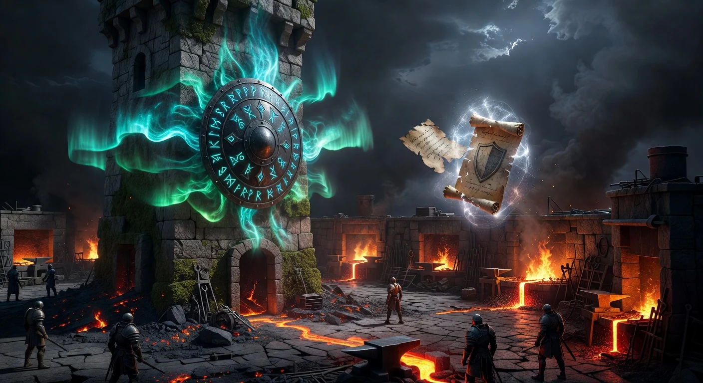

The Remote Bridge
Forward hub events off-box. Approve slices from your phone. One config, four channels.
551b850, 5b5a8e7). Four channels supported out of the box: Telegram, Slack, Discord, and OpenClaw. Generic webhook routing, per-channel rate limits, and a live config watcher on the dashboard's Notifications subtab.
Why a Remote Bridge?
Plan Forge runs inside your IDE — but some decisions are not IDE-shaped. A reviewer flagged a drift anomaly at 2 AM. A quorum tie needs a human tiebreaker. An incident fired after you closed the laptop. The Remote Bridge forwards hub events to the places you already have notifications — Telegram, Slack, Discord — and supports inline approval / reject flows for the events that need a human.
The Four Channels
| Channel | Best for | Approval flow |
|---|---|---|
| Telegram | Solo devs — inline buttons on your phone | ✅ Inline buttons (approve / reject) |
| Slack | Team channels — rich attachments, threading | ✅ Block Kit buttons |
| Discord | Community + OSS projects — embeds | ⚠️ Message-based (no inline buttons) |
| OpenClaw | Agent-to-agent coordination (v2.41+) | ✅ Handoff contract |
Event Routing
Every hub event carries a channels array. A single event can fan out to multiple destinations:
{
"type": "drift-alert",
"severity": "high",
"channels": ["telegram", "slack"],
"summary": "Drift score dropped from 0.91 → 0.62 after slice 04.2",
"approval": {
"required": true,
"options": ["continue", "pause", "rollback"]
}
}Routing is driven by a channels filter on severity and event type. High-severity LiveGuard events (secret found, env key mismatch, drift ≥ threshold) route by default; informational snapshots do not.
Approval Flow
For events with approval.required=true, the bridge renders interactive buttons (where the channel supports them). When a user clicks a button, the response flows back into the hub as an approval-response event with {channel, platform, user, decision, timestamp}. The orchestrator consumes that event to resume, pause, or roll back the run.
551b850) that queues overflow and drops low-severity events when saturated — never high-severity ones.
Configuration
Credentials live in .forge/secrets.json (gitignored). The bridge config itself is in .forge.json under remoteBridge:
{
"remoteBridge": {
"enabled": true,
"channels": {
"telegram": {
"chatId": "-1001234567890",
"severityFloor": "medium"
},
"slack": {
"webhookPath": "slack-ops",
"severityFloor": "high"
}
},
"rateLimits": {
"telegram": { "perSecond": 30 },
"slack": { "perSecond": 1 }
}
}
}Secrets (TELEGRAM_BOT_TOKEN, SLACK_SIGNING_SECRET, DISCORD_WEBHOOK_URL, etc.) stay out of git via the standard .forge/secrets.json scheme documented in the Guard station reference.
Dashboard — Notifications Subtab
The dashboard's Config → Notifications subtab (shipped 5b5a8e7) gives you:
- Live view of which channels are enabled and their severity floors.
- Per-channel rate-limit counters and last-send timestamps.
- Test-send button per channel (fires a synthetic
remote-testevent). - Live config watcher — edits to
.forge.jsonreload without restart.
OpenClaw — The Agent-to-Agent Channel
OpenClaw is the exception: it's not for humans. When openclaw.endpoint is configured, the PreAgentHandoff hook posts a snapshot (drift, MTTR, open incidents) to OpenClaw before the next agent takes the turn. This lets a separate coordinator service inject context across agents in multi-agent mode — Claude to Codex, Codex to Cursor, and so on. Skipped automatically when PFORGE_QUORUM_TURN is set.
Pairing With the Watcher
A recommended pattern: the Watcher (Chapter 19) runs on a long execution, emitting anomaly events into the hub. The Remote Bridge filters those events by severity and forwards the interesting ones to Telegram. Together they give you safe, phone-friendly observation of a forge running on another box.